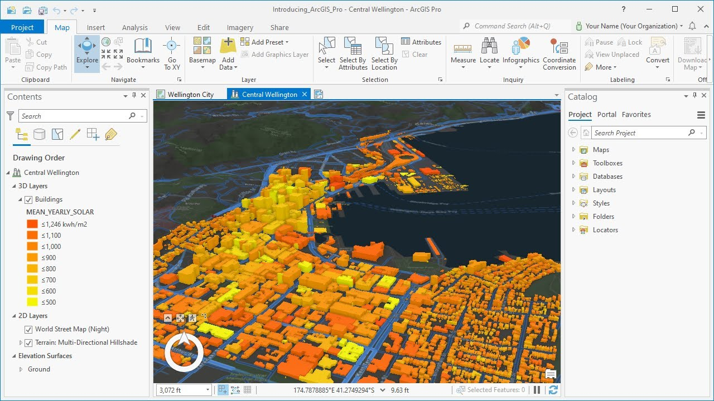
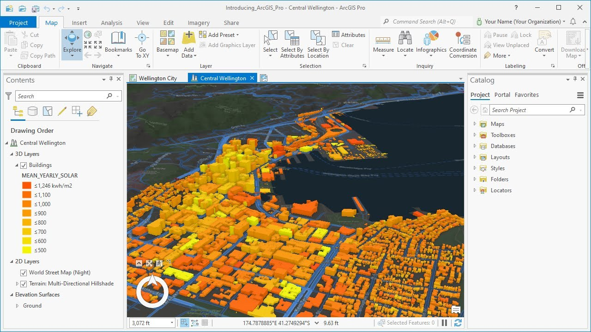

Welcome to the future of geospatial technology! ArcGIS Pro will allow you to explore, analyze, and visualize your spatial data seamlessly. Elevate your GIS experience with ArcGIS Pro's intuitive interface, advanced 3D mapping capabilities, and unparalleled geoprocessing tools. Revoluntionize the way you interact with geographic information - ArcGIS Pro is your gateway to precision, efficiency, and unparalleled insights into the world of spatial analysis.
 


Esri's ArcGIS Pro stands as a comprehensive solution, offering a multitude of advanced features designed to meet diverse geospatial needs and empower users with unparalleled capabilities.